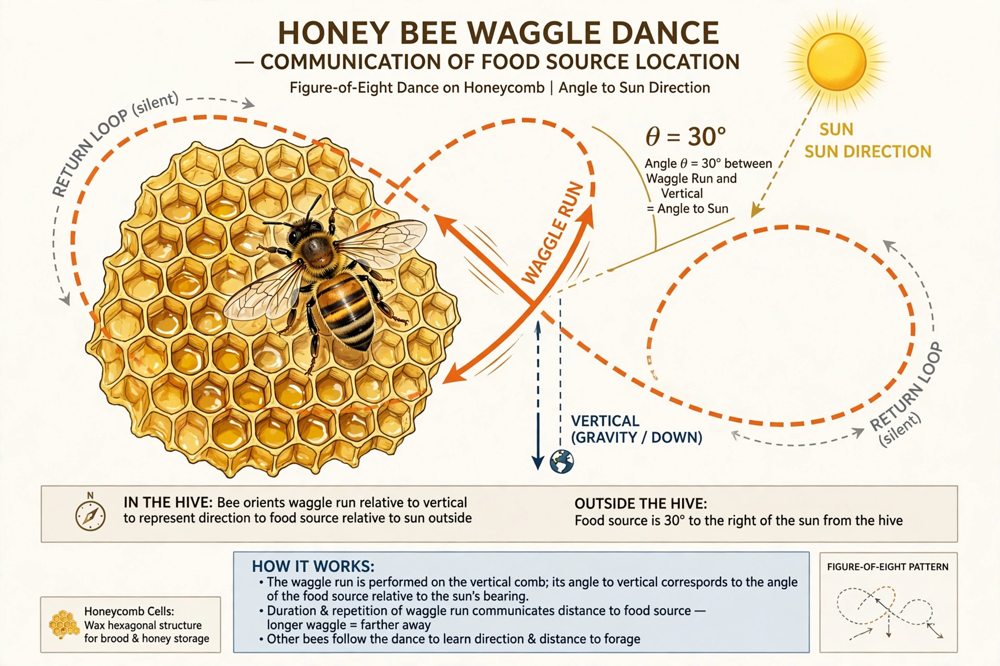

Waggle dance
| Waggle dance | |
|---|---|
 | |
| Species | Honey bees (Apis), especially Apis mellifera |
| Function | Recruitment communication: direction and distance to food, water, or nest sites |
| Decoded by | Karl von Frisch (1940s) |
Waggle dance is a term used for a particular figure-of-eight dance of the honey bee. By performing this dance, successful foragers can share information about the direction and distance to patches of flowers yielding nectar and pollen, to water sources, or to new nest sites with other members of the colony. It is one of the most sophisticated known systems of communication in non-human animals and a central example in comparative psychology.
How the dance encodes information
Returning to the hive, a forager runs in a pattern shaped like a flattened figure eight on the vertical comb. The central "waggle run" is the informative part: the bee waggles its abdomen from side to side (about 13–15 times per second) while moving forward, producing a buzzing sound with its wings.
- Direction: The angle of the waggle run relative to vertical (gravity) corresponds to the angle between the food source, the hive, and the sun's azimuth. If the food is directly toward the sun, the bee waggles straight up the comb; if the food is 40° to the right of the sun, the run is 40° to the right of vertical.
- Distance: The duration of the waggle run is proportional to the distance to the source — roughly one second of waggling per kilometre in Apis mellifera, with the exact calibration varying among subspecies ("dialects").
- Quality: The liveliness and persistence of the dance, and the number of dance circuits, reflect the profitability of the source.
For nearby food (within roughly 50–100 metres), bees instead perform a "round dance" that excites nestmates to search nearby without directional information. Follower bees detect the dance through contact with their antennae, in total darkness, and also pick up the floral odour carried on the dancer's body.
History of research
The dance was described in detail by Karl von Frisch, who in the 1940s demonstrated its directional and distance components through experiments with marked bees, observation hives and displaced feeding stations. His interpretation — that the dance is a symbolic "language" — was challenged in the 1960s by Adrian Wenner, who proposed that recruits rely on odour alone. Subsequent experiments, including the use of a mechanical model bee that could be programmed to dance, and harmonic-radar tracking of recruits in 2005, confirmed that recruits do use the directional information from the dance, while odour cues refine the final approach.
Other contexts
Waggle dances are also used during swarming, when scout bees advertise candidate new nest cavities and the swarm gradually reaches a consensus through competing dances. Variants of the dance occur in other Apis species; dwarf honey bees dance on horizontal surfaces and orient their runs directly toward the food source rather than transposing the sun angle to gravity.